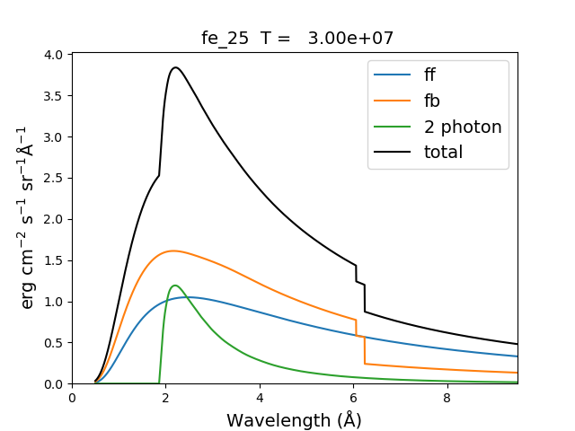
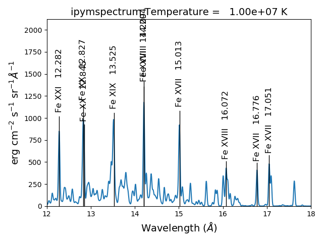

Quick Start¶
This short tutorial will demonstrate some of the capabilities of ChiantiPy and the CHIANTI database. It assumes that you know what the CHIANTI database provides and why you want to use it. It is useful to begin by exploring the properties of the ion class, as much of ChiantiPy is based on it. An ion such as Fe XIV is specified by the string ‘fe_14’, in the usual CHIANTI notation.
Perhaps the easiest way is to use a jupyter-notebook is to load the quick start notebook file QuickStart.ipynb in the directory jupyter_notebooks. Then, just run each cell step by step. If you are not familiar with notebooks, then you can cut and paste the following code into a Python/IPython session.
N.B.: in the time some of the plots and data were produced, there have been some changes to ChiantiPy and CHIANTI. It is possible that you might find differences (hopefully small).
Bring up a Python session (using > Python -i ), or better yet, an IPython session
import os
the following will show the XUVTOP directory
os.environ['XUVTOP']
import ChiantiPy
import ChiantiPy.core as ch
import ChiantiPy.tools.filters as chfilters
import ChiantiPy.tools.io as chio
import numpy as np
import matplotlib.pyplot as plt
matplotlib qt
autoreload 2
to see the ChiantiPy version
ChiantiPy.__version__
to see the Ipython version
import IPython
print(' IPython version = %i.%i.%i'%(IPython.version_info[0],IPython.version_info[1],IPython.version_info[2]))
It is useful to open a qtconsole where are the calculations can be easily examined
qtconsole
to see the version of the CHIANTI database
chianti_version = chio.versionRead()
chianti_version
Setting default values¶
ChiantiPy determines a number of default setting on instantiation. To use the default values list below, it is not necssary to do anything.
setting |
default |
possible values |
|---|---|---|
wavelength |
angstrom |
angstrom, nm, ev, kev |
flux |
energy |
energy, photon |
abundfile |
sun_photospheric_2015_scott |
any.abund |
ioneqfile |
chianti |
any.ioneq |
to use any of the other possible values, check out the notes/setting_default_values in the documentation
the defaults can be checked
chdata.Defaults.keys()
chdata.Defaults['wavelength']
Level populations¶
As a start, we will examine the various properties of the Fe XIV emissivities as a function of temperature and density. So, let’s define a numpy array of temperatures
temp = 10.**(5.8 + 0.05*np.arange(21.))
In ChiantiPy, temperatures are currently given in degrees Kelvin and densities as the number electron density per cubic cm. Then, construct fe14 as would be typically done
fe14 = ch.ion('fe_14', temperature=temp, eDensity=1.e+9, em=1.e+27)
note that eDensity is the new keyword for electron density
fe14.popPlot(addLegend=False)
produces a matplotlib plot window were the population of the top 10 (the default) levels are plotted as a function of temperature.
If the level populations had not already been calculated, popPlot() would have invoked the populate() method which calculates the level populations and stores them in the Population dictionary, with keys = [‘protonDensity’, ‘population’, ‘temperature’, ‘density’].
A ChiantiPy Convention¶
Classes and function of ChiantiPy start with lower case letters. Data/attributes that are attached to the instantiation of a class will start with a capital letter. For example,
fe14.populate() creates fe14.Population containing the level population information
fe14.intensity() created fe14.Intensity contain the line intensities information
fe14.spectrum() creates fe14.Spectrum contain the line and continuum spectrum information
Spectral Line Intensities¶
fe14.intensityPlot(wvlRange=[210.,220.])
will plot the intensities for the top (default = 10) lines in the specified wavelength range. If the Intensity attribute has not yet been calculated, it will calculate it. Since there are 21 temperature involved, a single temperature is selected (21//2 = 10). Otherwise,
fe14.intensityPlot(index=10, wvlRange=[210., 220.], relative=True)
plots the intensities for a temperature = t[10] = 2.e+6, in this case. And, by specifying relative = True, the emissivities will be plotted relative to the strongest line.
fe14.intensityPlot(index=10, wvlRange=[210., 220.], relative=True, doTitle=False, lw=2)
plots the intensities for a temperature = t[10] = 2.e+6, in this case. And, by specifying relative = True, the emissivities will be plotted relative to the strongest line, doTitle=False, stops the title from appearing and lw sets the line width to 2.

fe14.intensityList(wvlRange=[200,220], index=10)
gives the following terminal output:
using index = 10 specifying temperature = 2.00e+06, eDensity = 1.00e+09 em = 1.00e+27
------------------------------------------
Ion lvl1 lvl2 lower - upper Wvl(A) Intensity A value Obs
fe_14 1 11 3s2.3p 2P0.5 - 3s2.3d 2D1.5 211.3172 2.336e+02 3.81e+10 Y
fe_14 4 27 3s.3p2 4P1.5 - 3s.3p(3P).3d 4P1.5 212.1255 5.355e-01 2.21e+10 Y
fe_14 4 28 3s.3p2 4P1.5 - 3s.3p(3P).3d 4D2.5 212.1682 4.039e-01 1.15e+10 Y
fe_14 3 24 3s.3p2 4P0.5 - 3s.3p(3P).3d 4D0.5 213.1955 8.073e-01 4.26e+10 Y
fe_14 3 23 3s.3p2 4P0.5 - 3s.3p(3P).3d 4D1.5 213.8822 1.393e+00 2.97e+10 Y
fe_14 5 28 3s.3p2 4P2.5 - 3s.3p(3P).3d 4D2.5 216.5786 9.736e-01 2.83e+10 Y
fe_14 5 25 3s.3p2 4P2.5 - 3s.3p(3P).3d 4D3.5 216.9173 1.730e+00 4.29e+10 Y
fe_14 7 32 3s.3p2 2D2.5 - 3s.3p(3P).3d 2F3.5 218.1767 3.734e+00 1.70e+10 Y
fe_14 4 22 3s.3p2 4P1.5 - 3s.3p(3P).3d 4P2.5 218.5725 2.391e+00 2.65e+10 Y
fe_14 2 12 3s2.3p 2P1.5 - 3s2.3d 2D2.5 219.1305 5.077e+01 4.27e+10 Y
------------------------------------------
optionally, an output file could also be created by setting the keyword outFile to the name of the desired name
fe14.intensityList(wvlRange=[210.,220.], relative=1, index=11)
give the following terminal/notebook output
using index = 11 specifying temperature = 2.24e+06, eDensity = 1.00e+09 em = 1.00e+27
------------------------------------------
Ion lvl1 lvl2 lower - upper Wvl(A) Intensity A value Obs
fe_14 1 11 3s2.3p 2P0.5 - 3s2.3d 2D1.5 211.3172 1.000e+00 3.81e+10 Y
fe_14 4 27 3s.3p2 4P1.5 - 3s.3p(3P).3d 4P1.5 212.1255 2.267e-03 2.21e+10 Y
fe_14 4 28 3s.3p2 4P1.5 - 3s.3p(3P).3d 4D2.5 212.1682 1.694e-03 1.15e+10 Y
fe_14 3 24 3s.3p2 4P0.5 - 3s.3p(3P).3d 4D0.5 213.1955 3.390e-03 4.26e+10 Y
fe_14 3 23 3s.3p2 4P0.5 - 3s.3p(3P).3d 4D1.5 213.8822 5.891e-03 2.97e+10 Y
fe_14 5 28 3s.3p2 4P2.5 - 3s.3p(3P).3d 4D2.5 216.5786 4.083e-03 2.83e+10 Y
fe_14 5 25 3s.3p2 4P2.5 - 3s.3p(3P).3d 4D3.5 216.9173 7.085e-03 4.29e+10 Y
fe_14 7 32 3s.3p2 2D2.5 - 3s.3p(3P).3d 2F3.5 218.1767 1.557e-02 1.70e+10 Y
fe_14 4 22 3s.3p2 4P1.5 - 3s.3p(3P).3d 4P2.5 218.5725 1.009e-02 2.65e+10 Y
fe_14 2 12 3s2.3p 2P1.5 - 3s2.3d 2D2.5 219.1305 2.096e-01 4.27e+10 Y
------------------------------------------
The effect of electron density on line intensities¶
temp = 2.e+6
dens = 10.**(6. + 0.1*np.arange(61))
fe14 = ch.ion('fe_14', temp, dens)
fe14.popPlot()
a plot of the population of the top 10 levels is produced as a function of the electron density
G(n,T) function¶
temp = 10.**(5.8 + 0.05*np.arange(21.))
dens = 1.e+9
fe14 = ch.ion('fe_14', temp, dens)
fe14.gofnt(wvlRange=[210., 220.],top=3)
brings up a matplotlib plot window which shows the emissivities of the top (strongest) 3 lines in the wavelength region from 210 to 220 Angstroms.
quickly followed by a dialog where the line(s) of interest can be specified
and finally a plot of the G(n,T) function for the specified lines(s).
The G(n,T) calculation is stored in the Gofnt dictionary, with keys = [‘gofnt’, ‘temperature’, ‘density’]
while the is a fairly straightforward way to get a G(T) function, it is not very practical to use for a more than a handful of lines. For if the fe_14 line at 211.3172 is in a list of lines to be analyzed, a more practical way is the following
fe14.intensity()
dist = np.abs(np.asarray(fe14.Intensity['wvl']) - 211.3172)
idx = np.argmin(dist)
print(' wvl = %10.3f '%(fe14.Intensity['wvl'][idx]))
prints
wvl = 211.317
plt.loglog(temp,fe14.Intensity['intensity'][:,idx])
once the axes are properly scaled, this produces the same values as fe14.Gofnt[‘gofnt’]
Ionization Equilibrium¶
For the Fe XIV example, the temperature was chosen to center around 2.e+6. It was not immediately apparent why this was done but in most of the following examples it is necessary to pick an appropriate temperature. This can be done with the ioneq class. To look at the ionization equilibrium for the iron ions (Z = 26, or ‘fe’)
fe = ch.ioneq(26)
fe.load()
fe.plot()
plt.tight_layout()
brings up a plot showing the ionization equilibrium for all of the stages of iron as a function of temperature
This is pretty crowded and we are only interested in Fe XIV (fe_14), so
plt.figure()
fe.plot(stages=[13,14,15],tRange=[1.e+6, 6.e+6], yr = [1.e-2, 0.4])
plt.tight_layout()
produces a plot of the ionization equilibria of Fe XIII, XIV and XV over a limited temperature range (tRange) and vertical range (yr)
from this it is clear that Fe XIV (fe_14) is formed at temperatures near \(2 \times 10^6\) K
Intensity Ratios¶
temp = 10.**(5.8 + 0.05*np.arange(21.))
dens = 1.e+9
fe14 = ch.ion('fe_14', temperature = temp, eDensity = dens)
fe14.intensityRatio(wvlRange=[210., 225.])
this brings up a plot showing the relative emissivities on the Fe XIV lines
following by a dialog where you can selector the numerator(s) and denominator(s) of the desired intensity ratio

so the specified ratio is then plotted
if previously, we had done
dens = 10.**(6. + 0.1*arange(61))
fe14 = ch.ion('fe_14', 2.e+6, dens)
fe14.intensityRatio(wvlRange=[210., 225.])
then the plot of relative intensities vs density would appear
the same numerator/denominator selector dialog would come up and when 2 or more lines are selected, the intensity ratio versus density appears.
to obtain ratios of lines widely separated in wavelength, the wvlRanges keyword can be used:
fe12 = ch.ion('fe_12', temperature=t, eDensity=1.e+9
fe12.intensityRatio(wvlRanges=[[190.,200.],[1240.,1250.]])
Spectra of a single ion¶
fe14 = ch.ion('fe_14', temperature = 2.e+6, density = 1.e+9)
wvl = wvl=200. + 0.125*arange(801)
- ::
fe14.spectrum(wvl, em=1.e+27)
plt.figure()
plt.plot(wvl, fe14.Spectrum['intensity'])
xy = plt.axis()
xy
plt.axis([200., 300., 0., 400.])
plt.xlabel(fe14.Spectrum['xlabel'], fontsize=14)
plt.ylabel(fe14.Spectrum['ylabel'], fontsize=14)
plt.tight_layout()
this will calculate the spectrum of fe_14 over the specified wavelength range and filter it with the default filter which is a gaussian (filters.gaussianR) with a ‘resolving power’ of 1000 which gives a gaussian width of wvl/1000.
other filters available in chianti.tools.filters include a boxcar filter and a gaussian filter where the width can be specified directly
if hasattr(fe14,'Em'):
print(' Emission Measure = %12.2e'%(fe14.Em))
else:
print(' the value for the emission measure is unspecified')
Emission Measure = 1.00e+27
import chianti.tools.filters as chfilters
fe14.spectrum(wvl,filter=(chfilters.gaussian,.04))
calculates the spectrum of fe_14 for a gaussian filter with a width of 0.04 Angstroms. The current value of the spectrum is kept in fe14.Spectrum with the following keys:
for akey in sorted(fe14.Spectrum.keys()):
print(' %10s'%(akey))
allLines em filter filterWidth intensity wvl xlabel ylabel
plot(wvl,fe14.Spectrum['intensity'])
plt.xlabel(fe14.Spectrum['xlabel'])
plt.ylabel(fe14.Spectrum['ylabel'])
As of ChiantiPy 0.14.0, the ion class inherits the spectrumPlot method.
wvlRange = [wvl[0], wvl[-1]
fe14.spectrumPlot(wvlRange=wvlRange, index=5)
Also in 0.14.0 is the saveData method and the redux class. Using the saveData method, the calculations can be save and the restored later with the redux class
saveName = 'fe14_save.pkl'
fe14.saveData(saveName, verbose=True)
the attributes are used to create a dict and saved as a pickle file. If verbose is set to True, these attributes are listed
with open(saveName,'rb') as inpt:
fe14Dict = pickle.load(inpt)
for akey in fe14Dict:
print(' key = %s'%(akey))
for akey in fe14Dict['Spectrum']:
print(' key = %s'%(akey))
it is possible to work directly with the saved data
plt.figure()
plt.plot(fe14Dict['Spectrum']['wavelength'], fe14Dict['Spectrum']['intensity'])
with version 0.14.0, there is a new class, redux
with this class, the saved data can be restored and all of the apprpriated inherited methods are available
rdx = ch.redux(saveName, verbose=True)
The save data are loaded as attributes. With verbose=True, they are listed
rdx.spectrumPlot(wvlRange=wvlRange, index=5)
Returns the previous plot
New in ChiantiPy 0.6, the label keyword has been added to the ion.spectrum method, and also to the other various spectral classes. This allows several spectral calculations for different filters to be saved and compared. However, when the label keyword is specified, the intensityPlot and spectrumPlot methods do not work, as of version 0.14.0
temp = 10.**(5.8 + 0.1*np.arange(11.))
dens = 1.e+9
fe14 = ch.ion('fe_14', temp, dens)
emeas = np.ones(11,'float64')*1.e+27
wvl = 200. + 0.125*np.arange(801)
fe14.spectrum(wvl,filter=(chfilters.gaussian,.4),label='.4',em=emeas, label='0.4')
fe14.spectrum(wvl,filter=(chfilters.gaussian,1.),label='1.', label-'1.0')
plt.plot(wvl,fe14.Spectrum['.4']['intensity'][5])
plt.plot(wvl,fe14.Spectrum['1.']['intensity'][5],'-r')
plt.xlabel(fe14.Spectrum['.4']['xlabel'])
plt.ylabel(fe14.Spectrum['.4']['ylabel'])
plt.legend(loc='upper right')
plt.tight_layout()
Using emission measures (EM)¶
the line-of-sight emission measure is given by \(\mathrm{\int \, n_e \, n_H \, dl}\) (\(\mathrm{cm}^{-5}\))
the volumetric emission measure is give by \(\mathrm{\int \, n_e \, n_H \, dV}\) (\(\mathrm{cm^{-3}}\))
where the integrations are performed over the source region
emDir = os.path.join(os.environ['XUVTOP'], 'em')
emList = os.listdir(emDir)
for idx, emFile in enumerate(emList):
print('%i %s'%(idx, emFile))
the following is printed
Beginning with CHIANTI version 10, a new directory, em, as been added to contain emission measure files.
At this time, there only 2 files available and we can pick the active region file
arDict = chio.emRead(emList[1])
arDict.keys()
dict_keys([‘temperature’, ‘density’, ‘em’, ‘ref’, ‘filename’])
arTemp = arDict['temperature']
arDens = arDict['density']
arEm = arDict['em']
for idx, atemp in enumerate(arTemp):
print('%i %10.2e %10.2e %10.2e'%(idx, atemp, arDens[idx], arEm[idx]))
fe14 = ch.ion('fe_14', arTemp, arDens, em=arEm)
wvl = np.linspace(200., 300., 10001)
fe14.spectrum(wvl, filter=(chfilters.gaussian, .03))
fe14.spectrumPlot(wvlRange=[264., 275.], integrated=True, top=5)
Free-free and free-bound continuum¶
The module continuum provides the ability to calculate the free-free and free-bound spectrum for a large number of individual ions. The two-photon continuum is produced only by the hydrogen-like and helium-like ions
myIon = 'fe_25'
temperature = [2.e+7, 3.e+7, 6.e+7]
density = 1.e+9
em = [1.e+27, 1.e+27, 1.e+27]
wvl = 0.5 + 0.002*np.arange(4501)
c = ch.continuum(myIon, temperature = temperature, em=em)
c.freeFree(wvl)
c.freeBound(wvl)
fe25=ch.ion(myIon, temperature, density, em=em)
fe25.twoPhoton(wvl)
total = c.FreeFree['intensity'][itemp] + c.FreeBound['intensity'][itemp] + fe25.TwoPhoton['intensity'][itemp]
itemp = 1
plt.figure()
plt.plot(wvl, c.FreeFree['intensity'][itemp],label='ff')
plt.plot(wvl, c.FreeBound['intensity'][itemp],label='fb')
plt.plot(wvl,fe25.TwoPhoton['intensity'][itemp],label='2 photon')
plt.plot(wvl, total, 'k', label='total')
plt.xlabel(c.FreeFree['xlabel'], fontsize=14)
plt.ylabel(c.FreeFree['ylabel'], fontsize=14)
plt.legend(loc='upper right', fontsize=14)
plt.title(' %s T = %10.2e'%(fe25.IonStr, temperature[itemp]), fontsize=14)
plt.ylim(bottom=0.)
plt.xlim([0., wvl[-1]])
plt.tight_layout
produces
myIon = 'o_8'
temperature = [3.e+6, 6.e+6]
density = 1.e+9
em = [2.e+27,1.e+27]
wvl = 2. + 0.2*np.arange(701)
c = ch.continuum(myIon, temperature = temperature, em=em)
c.freeFree(wvl)
c.freeBound(wvl)
o8 = ch.ion(myIon, temperature, density, em=em)
o8.twoPhoton(wvl)
total = c.FreeFree['intensity'][itemp] + c.FreeBound['intensity'][itemp] + o8.TwoPhoton['intensity'][itemp]
itemp = 1
plt.figure()
plt.semilogy(wvl, c.FreeFree['intensity'][index],label='ff')
plt.semilogy(wvl, c.FreeBound['intensity'][index],label='fb')
plt.semilogy(wvl,o8.TwoPhoton['intensity'][index],label='2 photon')
plt.plot(wvl, total[itemp], 'k', label='total')
plt.ylim(bottom=1.e-4, top=1.)
plt.xlabel(c.FreeFree['xlabel'], fontsize=14)
plt.ylabel(c.FreeFree['ylabel'], fontsize=14)
plt.title(' %s T = %10.2e'%(o8.IonStr, temperature[itemp]), fontsize=14)
plt.legend(loc='upper right', fontsize=14)
plt.tight_layout()
produces
In the continuum calculations, the specified ion, Fe XXV in this case, is the target ion for the free-free calculation. For the free-bound calculation, specified ion is also the target ion. In this case, the radiative recombination spectrum of Fe XXV recombining to form Fe XXIV is returned.
The multi-ion class Bunch¶
The multi-ion class bunch [new in v0.6] inherits a number of the same methods inherited by the ion class, for example intensityList, intensityRatio, and intensityRatioSave. As a short demonstration of its usefulness, Widing and Feldman (1989, ApJ, 344, 1046) used line ratios of Mg VI and Ne VI as diagnostics of elemental abundance variations in the solar atmosphere. For that to be accurate, it is necessary that the lines of the two ions have the same temperature response.
temp = 10.**(5.0+0.1*np.arange(11))
dens = 1.e+9
wvlRange = [wvl.min(),wvl.max()]
bnch=ch.bunch(temp, 1.e+9, wvlRange=wvlRange, ionList=['ne_6','mg_6'], abundance='unity', em=1.e+27)
bnch.intensityRatio(wvlRange=[395.,405.], top=7)
produces and initial plot of the selected lines, a selection widget and finally a plot of the ratio
there seems to be a significant temperature dependence to the ratio, even though both are formed near 4.e+5 K.
The intensityPlot method can also be used with the bunch class
bnch.intensityPlot(index=5, wvlRange=[398., 404.])
results in
with version 0.13.0 it is possible to save multi-ion calculations as a pickle file with the saveData method
dataName = 'mybunch.pkl'
bnch.saveData(dataName, verbose=True)
the saveData method creates a dict of all of the attributes of the bnch instance. The pickle file can be loaded an it is possible to work directly with the data.
with open(dataName, 'rb') as inpt:
mybnch = pickle.load(inpt)
mybnch.keys()
mybnch['Intensity']['intensity'].shape
with version 0.14.1, the redux class is introduced to allow the use of the pickled data inside a class that inherits such methods as intensityPlot and spectrumPlot
rebnch = ch.redux(dataName, verbose=False)
rebnch.intensityPlot(index=5, wvlRange=[398., 404.])
then returns the above plot
A new keyword argument keepIons has been added in v0.6 to the bunch and the 3 spectrum classes. It should be used with some care as it can lead to very large instances in the case of a large number of ions, temperature, or densities.
temp = 10.**(5.0+0.2*np.arange(6))
dens = 1.e+9
dwvl = 0.01
nwvl = (406.-394.)/dwvl
wvl = 394. + dwvl*np.arange(nwvl+1)
bnch2=ch.bunch(temp, 1.e+9, wvlRange=[wvl.min(),wvl.max()], elementList=['ne','mg'], \
keepIons=1,em=1.e+27)
bnch2.convolve(wvl,filter=(chfilters.gaussian,5.*dwvl))
elapsed seconds = 11.000
for one in sorted(bnch2.IonInstances.keys()):
print('%s'%(one))
yields:
these IonInstances have all the properties of the Ion class for each of these ions. However, this should be used with some caution as it can result in a memory-hogging instance.
bnch2.spectrumPlot(integrated=True, doLabel=False)
plt.plot(wvl,bnch2.IonInstances['mg_6'].Spectrum['integrated'],'r',label='mg_6')
plt.xlim(left=398., right=404.)
plt.legend(loc='upper left', fontsize=14)
produces
The spectrumPlot method can also be used with bunch after convolve is run
bnch2.spectrumPlot(top=7)
Spectra of multiple ions and continuum¶
the spectrum for all ions in the CHIANTI database can also be calculated
The spectrum for a selection of all of the ions in the CHIANTI database can also be calculated. There are 3 spectral classes.
spectrum - the single processor implementation that can be used anywhere
mspectrum - uses the Python multiprocessing class and cannot be used in a IPython qtconsole or notebook
ipymspectrum [new in v0.6] - uses the IPython parallel class and can be used in a IPython qtconsole or notebook
As of version 0.13.0, it is now possible to save the calculations with the saveData methods, demonstrated with the bunch class above
The single processor spectrum class¶
temperature = [1.e+6, 2.e+6]
density = 1.e+9
wvl = 200. + 0.05*arange(2001)
emeasure = [1.e+27 ,1.e+27]
s = ch.spectrum(temperature, density, wvl, filter = (chfilters.gaussian,.2), em = emeasure, doContinuum=0, minAbund=1.e-5)
subplot(311)
plot(wvl, s.Spectrum['integrated'])
subplot(312)
plot(wvl, s.Spectrum['intensity'][0])
subplot(313)
plot(wvl, s.Spectrum['intensity'][1])
produces
The integrated spectrum is formed by summing the spectra for all temperatures.
For minAbund=1.e-6, the calculatation takes 209 s on a 3.5 GHz processor.
For minAbund=1.e-5, the calculatation takes 122 s on a 3.5 GHz processor.
The filter is not applied to the continuum.
Save the calculations
saveName = 'spectrum.pkl'
s.saveData(saveName, verbose=True)
The spectrumPlot method is also available
s.spectrumPlot(integrated=True)
yields
One can return to the saved data at a later date and reload it with the redux class
rdx = ch.redux(saveName)
The inherited spectrumPlot is again available
rdx.spectrumPlot(index=1)
produces a figure like above
Calculations with the Spectrum module can be time consuming. One way to control the length of time the calculations take is to limit the number of ions with the ionList keyword and to avoid the continuum calculations by setting the doContinuum keyword to 0 or False. Another way to control the length of time the calculations take is with the minAbund keyword. It sets the minimum elemental abundance that an element can have for its spectra to be calculated. The default value is set include all elements. Some usefull values of minAbund are:
minAbund = 1.e-4, will include H, He, C, O, Ne
minAbund = 2.e-5 adds N, Mg, Si, S, Fe
minAbund = 1.e-6 adds Na, Al, Ar, Ca, Ni
The multiple processor mspectrum class¶
Another way to speed up calculations is to use the mspectrum class which uses multiple cores on your local computer. It requires the Python multiprocessing module which is available with Python versions 2.6 and later. mspectrum is called in the same way as spectrum but you can specify the number of cores with the proc keyword. The default is 3 but it will not use more cores than are available on your machine. For example,
temp = [1.e+7, 2.e+7, 3.e+7]
dens = 1.e+9
wvl = np.linspace(1.5, 4., 10001)
emeasure = 1.e+27
core=6
dwvl = wvl[1] - wvl[0]
' dwvl: %8.4f'%(dwvl)
sm = ch.mspectrum(temperature, density ,wvl, em=emeasure, filter = (chfilters.gaussian, 5.*dwvl), proc=core)
sm.spectrumPlot(wvlRange=[1.84, 1.88], index=2)
yields
another example
Using differential emission measures (DEM)¶
Beginning with CHIANTI version 14.1, the io.demRead function has been added to read dem file in the existing XUVTOP/dem directory
demDir = os.path.join(os.environ['XUVTOP'], 'dem')
demList = os.listdir(demDir)
for idx, demFile in enumerate(demList):
print('%i %s'%(idx, demFile))
produces
select the desired file by index
flDict = chio.demRead(demList[3])
flDict.keys()
dict_keys([‘temperature’, ‘density’, ‘dem’, ‘em’, ‘dt’, ‘ref’, ‘filename’])
since we will be looking at X-ray wavelengths, select only the highest temperatures
flTemp = flDict['temperature'][20:]
flDens = flDict['density'][20:]
flEm = flDict['em'][20:]
wvl = 1. + 0.002*np.arange(4501)
core = 6
s3 = ch.mspectrum(flTemp, flDens, wvl, filter = (chfilters.gaussian,.015), em=flEm, minAbund=1.e-5, proc=core, verbose=0)
save the calculations¶
saveName = 'mspectrum3_dem.pkl'
s3.saveData(saveName)
plt.figure()
plt.plot(wvl, s3.Spectrum['intensity'].sum(axis=0))
plt.xlabel(s3.Spectrum['xlabel'], fontsize=14)
plt.ylabel(s3.Spectrum['ylabel'], fontsize=14)
plt.ylim(bottom = 0.)
plt.xlim([0., wvl[-1]])
plt.tight_layout()
The spectrumPlot method can also be used
s3.spectrumPlot(top=6)
the default value for doContinuum is True, so, the continuum can be plotted separately
plt.figure()
plt.plot(wvl, s3.FreeFree['intensity'], label='FF')
plt.plot(wvl, s3.FreeBound['intensity'], label='FB')
plt.plot(wvl, s3.TwoPhoton['intensity'], label='2 Photon')
plt.plot(wvl, s3.Continuum['intensity'].sum(axis=0), 'k', label='Total')
plt.xlabel(s3.Spectrum['xlabel'], fontsize=14)
plt.ylabel(s3.Spectrum['ylabel'], fontsize=14)
plt.ylim(bottom = 0.)
plt.xlim([0., wvl[-1]])
plt.legend(loc='upper right', fontsize=14)
plt.tight_layout()
produces
s3.spectrumPlot(wvlRange=[4., 9.], top=6, integrated=True)
produces
With the redux class, the save calculations can be restored¶
s3r = ch.redux(saveName, verbose=True)
the redux class inherits the intensityPlot and spectrumPlot methods as well as a few others
s3r.spectrumPlot(wvlRange=[6., 7.], integrated=True, top=5)
The multiple processor ipymspectrum class¶
next, we will use the ipymspectrum class. First, it is necessary to start up the cluster. In some shell
> ipcluster start –n=4
or, if you are using Python3
> ipcluster3 start –n=4
this will start 4 engines if you have 4 cores but it won’t start more than you have
then in an IPython notebook or qtconsole
temp = [1.e+6, 2.e+6]
dens = 1.e+9
wvl = 200. + 0.05*np.arange(2001)
emeasure = [1.e+27 ,1.e+27]
s = ch.ipymspectrum(temp, dens, wvl, filter = (chfilters.gaussian,.2), \
em = emeasure, doContinuum=1, minAbund=1.e-5, verbose=True)
plt.figure()
plt.plot(wvl, s.Spectrum['integrated'])
plt.ylim(bottom=0.)
plt.xlim([wvl[0], wvl[-1]])
plt.title('Integrated')
plt.xlabel(s.Xlabel, fontsize=14)
plt.ylabel(s.Ylabel, fontsize=14)
plt.tight_layout()
produces
spectrum, mspectrum and ipymspectrum can all be instantiated with the same arguments and keyword arguments. Most of the examples below use the ipymspectrum class for speed.
temperature = 1.e+7
dens = 1.e+9
wvl = 10. + 0.005*np.arange(2001)
s = ch.ipymspectrum(temp, dens, wvl, filter = (chfilters.gaussian,.015), \
elementList=['fe'])
s.spectrumPlot()
produces
It is also possible to specify a selection of ions by means of the ionList keyword, for example, ionList=[‘fe_11’,’fe_12’,’fe_13’]
s2 = ch.ipymspectrum(temp, dens, wvl, filter = (chfilters.gaussian,.2), \
em = emeasure, doContinuum=0, keepIons=1, elementList=['si'])
fig, [ax1, ax2] = plt.subplots(2,1)
ax1.plot(wvl,s2.Spectrum['intensity'][0])
ax1.set_ylim(bottom=0.)
ax1.set_xlim([wvl[0], wvl[-1]])
ax1.set_ylabel(r'erg cm$^{-2}$ s$^{-1}$ sr$^{-1} \AA^{-1}$', fontsize=14)
ax2.plot(wvl,s2.IonInstances['si_9'].Spectrum['intensity'][0])
ax2.set_ylim(bottom=0.)
ax1.set_xlim([wvl[0], wvl[-1]])
ax2.set_ylabel(r'erg cm$^{-2}$ s$^{-1}$ sr$^{-1} \AA^{-1}$', fontsize=14)
ax2.set_xlabel(r'Wavelength ($\AA$)', fontsize=14)
ax2.set_title('Si IX', fontsize=14)
fig.tight_layout()
Because keepIons has been set, the ion instances of all of the ions are maintained in the s2.IonInstances dictionary. It has been possible to compare the spectrum of all of the ions with the spectrum of a single ion. It should be used with some care as it can lead to very large instances in the case of a large number of ions, temperature, or densities.
temperature = 2.e+7
density = 1.e+9
em = 1.e+27
wvl = 1.84 + 0.0001*arange(601)
s4 = ch.ipymspectrum(temperature, density ,wvl, filter = (chfilters.gaussian,.0003), \
doContinuum=1, minAbund=1.e-5, em=em, verbose=0)
s4.spectrumPlot()
produces
There are two demo notebooks, spectrum_demo.ipynb and spectrum_demo_2.ipynb in the jupyter_notebooks directory on github.
Radiative loss rate¶
the radiative loss rate can be calculated as a function of temperature and density. If all elements are included, the calculation can take some time. So, for a shorter example:
temp = 10.**(4.+0.05*np.arange(81))
dens = 1.e+9
rlhhe = ch.radLoss(temp, dens, elementList=['h', 'he'])
plt.figure()
rl.radLossPlot()
produces, in 2s:
with version 0.15.0, the class mradLoss is available for doing a multiprocessor calculation of the radiation loss
temp = 10.**(4.+0.05*np.arange(81))
dens = 1.e+9
the following will calculate the radiation loss for elements with an abundance greater the 1.e-5 that of the hydrogen abundance. In this case the default abundance file is for photospheric abundances
mrl = ch.mradLoss(temp, dens, minAbund=1.e-5)
these calculations can take some time so it is a good idea to save them
mrl.saveData('rl_phot_1m5.pkl')
plt.figure()
mrl.radLossPlot()
produces, produces after 250s on a 3.5 GHz 4 core processor:

the radiative losses are kept in the rl.RadLoss dictionary
the abundance keyword argument can be set to the name of an available abundance file in XUVTOP/abund
if abundance=’abc’, or some name that does not match an abundance name, a dialog will come up so that a abundance file can be selected
or:
abundDir = os.path.join(os.environ['XUVTOP'], 'abundance')
abundList = os.listdir(abundDir)
for idx, aname in enumerate(abundList):
print('%5i %s'%(idx, aname))
to select photospheric abundances
myAbund = abundList[4]
myAbund
mrl2 = ch.radLoss(temp, dens, minAbund=1.e-5, abundance=myAbund, verbose=1)
saveName = 'rl_coronal_1m5.pkl'
mrl2.saveData(saveName)
plt.figure()
mrl2.radLossPlot()
produces after 250s on a 3.5 GHz 4 core processor
plt.figure()
plt.loglog(temp, mrl2.RadLoss['rate'], 'k', label='Total')
plt.loglog(temp, mrl2.BoundBoundLoss, label = 'BB')
plt.loglog(temp, mrl2.FreeFreeLoss, label = 'FF')
plt.loglog(temp, mrl2.FreeBoundLoss, label = 'FB')
plt.loglog(temp, mrl2.TwoPhotonLoss, label = '2P')
plt.xlabel(mrl2.RadLoss['xlabel'], fontsize=14)
plt.ylabel(mrl2.RadLoss['ylabel'], fontsize=14)
plt.legend(loc='lower center', fontsize=14)
plt.tight_layout()
produces
to compare photospheric and coronal radiation losses
rlph = ch.redux(saveNamePhot)
rlco = ch.redux(saveNameCoronal)
plt.figure()
plt.loglog(temp, rlph.RadLoss['rate'], label='Phot')
plt.loglog(temp, rlco.RadLoss['rate'], label='Coronal')
plt.ylim(bottom=1.e-23, top=2.e-21)
plt.xlabel(rlph.RadLoss['xlabel'], fontsize=14)
plt.ylabel(rlph.RadLoss['ylabel'], fontsize=14)
plt.legend(loc='lower center', fontsize=14)
plt.tight_layout()
produces
Jupyter Notebooks¶
There are 9 jupyter notebooks in the jupyter_notebooks directory that demonstrate the capabilities of ChiantyPy together with the CHIANTI database. There is also a README.txt file that provides a short explanation of the notebooks.
A summary of the notebooks¶
This directory contains 9 Jupyter IPython notebooks that demonstrate some of the ways to use ChiantiPy and the CHIANTI database
QuickStart.ipynb - a notebook that generally follows the Quick-Start guide in the docs
A demo of the bunch class is found in: bunch_demo.ipynb
These notebook show some of the characteristics and capabilities of the bunch class. Among other things, it shows how to apply labels to plots of line intensities.
Two demos of the spectrum class are found in: spectrum_demo.ipynb and spectrum_demo_2.ipynb
As with the bunch notebook, these notebook show some of the characteristics and capabilities of the spectrum class. Among other things, it shows how to apply labels to plots of spectra as a funcition of wavelength.
The directory also contains 5 other notebooks and a json file. These are demo files for reproducing some of the analyses in the paper “Electron densities and their uncertainties derived from spectral emission line intensities” by Kenneth Dere. This paper has been published in the Monthly Notices of the Royal Astronomical Society, 2020, 496, 2334.
The notebook file ‘1_fe_13_demo_make_model.ipynb’ constructs the model that is used by 2_fe_13_demo_check_model.ipynb and 3_fe_13_demo_chi2_search.ipynb by reading the ‘tab2_1993_qs_fe_13.json’ file. It is easiest if all files are placed in the same directory. This files contains the Fe XIII line intensities from Brosius et al., 1996, Astrophysical Journal Supplement Series, 106, 143. This notebook file needs to be run first.
The next notebook to run is: 2_fe_13_demo_check_model.ipynb – This notebook load the previously created pickle containing the match attribute. In this notebook a density and emission measure are guessed from an ‘em loci’ plot and the predictions compard with the observations.
The next notebook to run is: 3_fe_13_demo_chi2_search.ipynb – This performs a brute force chi-squared search over the density range and finds the best fit density and emission measure. These best values are then inserted into the model, a prediction made and compared with the observations.
The next notebook to run is: 4_fe_13_demo_mcmc.ipynb – This performs a MCMC analysis of the spectra to determine the most likely density and emission measure from an analysis of the trace. The trace is also save for futher analysis.
The next notebook to run is: 5_fe_13_demo_mcmc_trace_analyze.ipynb – the load the trace so that it can be re-analyzed